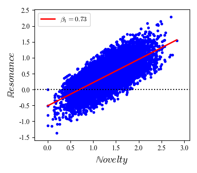
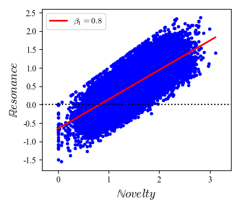
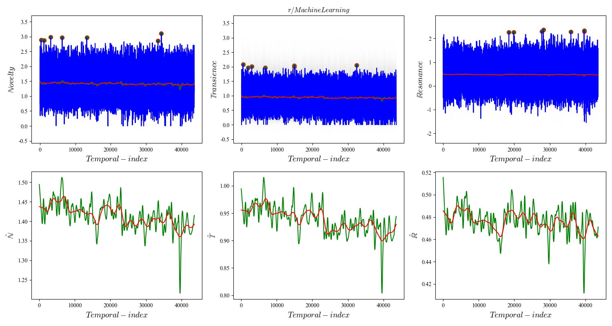
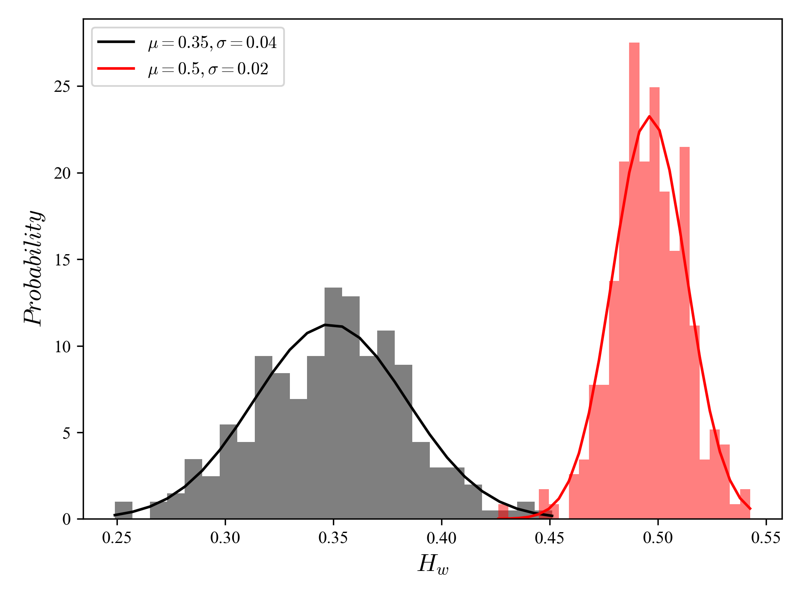
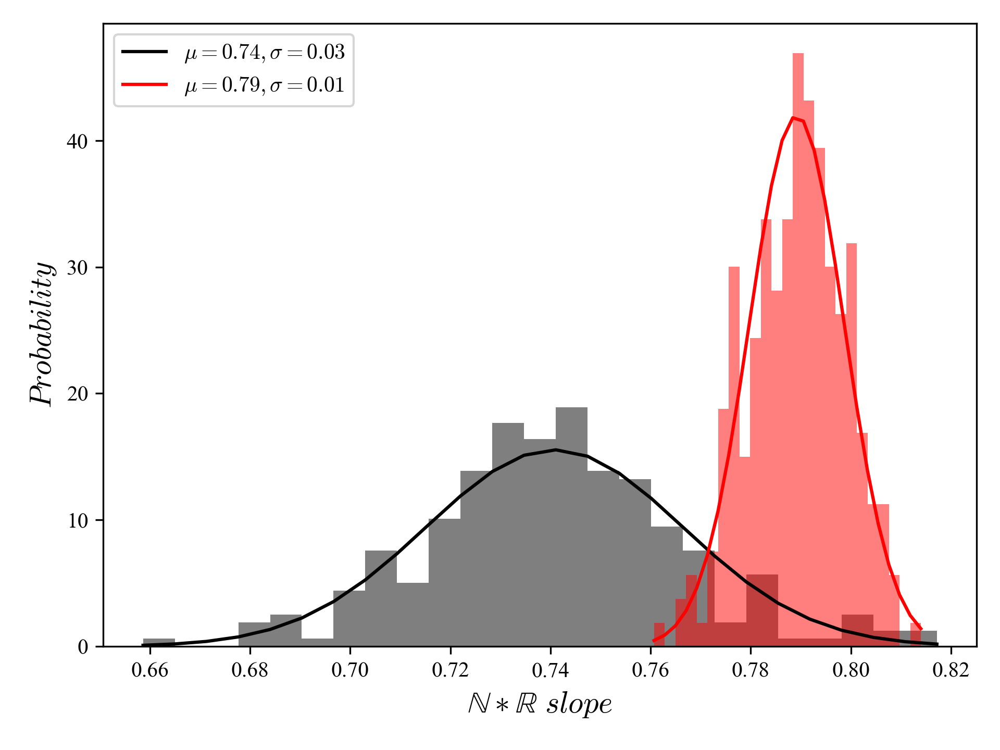

Sociocultural trends from social media platforms such as Twitter or Instagram have become an important part of knowledge discovery. The `trend' construct is however ambiguous and its estimation from unstructured sociocultural data complicated by several methodological issues. This paper presents an approach to trend estimation that combines (`intersects') domain knowledge of social media with advances in information theory and dynamical systems. In particular, we show how *trend reservoirs* (i.e., signals that display trend potential) can be identified by their relationship between novel and resonant behavior, and their minimal persistence.This approach contrasts with trend estimation that relies on linear or polynomial techniques to study point-like novelty behavior in social media, and it completes approaches that rely on smooth functions of time.
